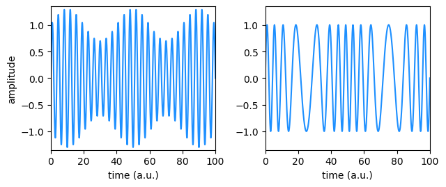

Amplitude and Phase Modulation
or How to tame the Bessel functions
Abstract
I believe I am not the only one to struggle with the spectrum of a phase modulated signal. Even the pure tone phase modulation spectrum consists of an infinite number of sidebands whose phase changes from one sideband to the next one and whose amplitudes are given by the Bessel functions. This document presents a visual representation of amplitude and phase modulation.1
Background
I started writing this note while working for Zurich Instruments, a Swiss maker of scientific instrumentation. At that time, the company was selling only one product, a lock-in amplifier, and we were naturally tackling all customers’ problems in terms of demodulation.
In short, a lock-in amplifier finds the amplitude \(A\) and phase \(\varphi\) of an input signal of the type
\[ V_S(t) = A\cos(2\pi f_Ct+\varphi). \tag{1}\] by a process called demodulation. The existing literature explains it with the multiplication of the input signal by sine and cosine of the reference phase, also referred to as the in-phase and quadrature of the reference but I found this explanation lacked in clarity.
The multiplication by sine and cosine is equivalent to looking at the signal from a reference frame rotating with the reference phase. This element is key for the pictorial representation of amplitude and phase modulation.
Complex Phasors to Represent Real Signals
The generic modulated signal of Equation 1 can also be written in the complex plane as the sum of two phasors, each one of length \(\tfrac{1}{2}A\) rotating at the same speed \(\omega_C=2\pi f_C\), in opposite directions:
\[ \frac{A(t)}{2}\left(e^{j[\omega_Ct+\varphi(t)]}+e^{ - j[\omega_Ct+\varphi(t)]} \right) \tag{2}\] with a constant carrier angular frequency \(\omega_C\) and (possibly) time-dependent \(A(t)\) and \(\varphi(t)\).
From a spectral point of view, the two phasors are the exact copy of each other, one at positive frequency \(+f_C\) and the other at negative frequency \(-f_C\), with amplitude \(\tfrac{1}{2}A\) and phase \(\varphi\). We therefore discard the negative frequency component \(-f_C\) term because it has the same spectral content as the one at positive frequency, just mirrored. We also neglect the constant factor \(\frac{1}{2}\) that is irrelevant for amplitude and phase modulation. We are left with
\[ A(t)e^{j[\omega_C t + \varphi(t)]}. \] Next, we want to get rid of the carrier, which only shifts the spectrum by the constant quantity \(\omega_C\) but carries otherwise no useful information. To do so, we multiply the quantity above by \(e^{-j\omega_C t}\).
{kind=link}
The multiplication by \(e^{-j\omega_C t}\) can also be interpreted as a change of the reference frame: indeed complex numbers provide a convenient way of dealing with rotations on a 2D plan.
Suppose to be standing at the origin and rotate anti-clockwise with angular velocity \(\omega_C\). In this rotating frame2, the phasor will appear as essentially steady3 except for the amplitude and phase modulation given by
\[ d(t) = A(t)e^{j\varphi(t)} \tag{3}\] In general this signal is neither a pure amplitude nor a frequency modulated signal since both vary as shown by the black arrow in Figure 2.
In an amplitude modulated signal, only the phasor length \(A(t)\) changes (the blue line in the figure) but not its phase: in other words, all the changes are along the phasor direction and not perpendicular to it. Phase modulation on the other hand would instead move the phasor on a circle (red line), with no changes to its radius.
Amplitude Modulation
We will see that the sidebands of amplitude and narrow band phase modulations differ only by an angle: that is why they are indistinguishable by Fourier power spectral analysis because the phase information is lost when squaring the Fourier transform. It is easy to understand the origin of the phase difference using complex phasors.
{kind=link}
A general AM signal has a modulated amplitude \(A(t)\) and a constant phase offset \(\varphi(t)=\varphi_0\). To be more specific, I take a pure tone AM signal
\[ d_\textrm{AM}(t) \equiv 1+h\cos(\omega_mt) = 1+\frac{h}{2}\left[e^{+j\omega_mt}+e^{-j\omega_mt}\right] \tag{4}\] with carrier amplitude \(1\), amplitude modulation \(h\) and angular frequency \(\omega_m\) (typically \(\omega_m\ll \omega_C\) although this is not relevant for the discussion). For the moment I also set \(\varphi_0\) equal to zero.
We need to consider both modulation phasors of Equation 4. With reference to Figure 3 a), the modulation of the amplitude, \(h\cos(\omega_mt)\), originates from the two phasors of length \(\frac{h}{2}\) rotating in opposite directions, each with frequency \(f_m\); their sum, the thick blue arrow, lays always along the \(x\)–axis. These are the two sidebands of the AM spectrum.
Phase of AM Sidebands
What about their relative phase in the Fourier (frequency) space? The pictorial representation provides the answer. The phase is determined by the phasors’ value at \(t=0\): phasor pointing along the \(x\)–axis have real amplitude, phasors pointing along \(y\) imaginary amplitude.
In the AM case, the signal is only modulated in the direction collinear to the carrier phasor and the two sidebands must always be at relative angles such that the phasors’ sum satisfy this constraint.
For instance, for the modulation of Equation 4, both phasors have real value \(+\tfrac{h}{2}\) at \(t=0\) or \(0^\circ\) with respect to the carrier. Figure 3 b) show the carrier, purely real because we have chosen \(\varphi_0=0\) and the two sidebands pointing in the same direction as that of the carrier. This is the “textbook” picture for AM.
This picture changes had we instead chosen an amplitude modulation of the form
\[ 1+h\sin(\omega_mt) = 1 - \frac{jh}{2}\left[e^{+j\omega_mt}-e^{-j\omega_mt}\right] \] as in Figure 3 c). Here the phasor with negative frequency has value \(+\tfrac{jh}{2}\) at \(t=0\) or \(+90^\circ\) with respect to the carrier; the other at positive frequency has value \(-\tfrac{jh}{2}\) or \(-90^\circ\) to the carrier. Figure 3 d). The \(90^°\) angle comes from the trigonometric identity \(\sin(\omega_mt) = \cos(\omega_mt - \tfrac{\pi}{2})\)
We are left to quickly discuss the case \(\varphi_0\ne 0\). Now the carrier phasor has an angle \(\varphi_0\) with the \(x\)-axis; since the signal amplitude is always modulated collinear to the carrier phasor, both modulation phasors acquire the phase \(\varphi_0\).
Phase Modulation
In an PM signal, the situation is more complicated. We refer again to Equation 3: a general PM signal has a modulated phase \(\varphi(t)\) and a constant amplitude \(A(t)\) assumed here for simplicity to be \(A(t)=1\).
Consider now a pure tone PM signal
\[ d_\textrm{PM}(t) \equiv e^{jh\sin(\omega_mt)} \tag{5}\] with modulation index \(h\). Is there an intuitive way of showing why the PM signal of Equation 5 has a frequency spectrum consisting of an infinite number of sidebands at \(\pm n\omega_m\) and the amplitude of the \(n\)-th sideband is given by the \(n\)-th Bessel function?
Pictorial Representation of First Set of Sidebands
\(d_\textrm{PM}(t)\) has constant amplitude, so it describes a phasor that moves on a circle of radius \(1\). For a small phase swing, \(h\ll 1\), we can neglect the curvature of the circle, see Figure 4 a) and two terms only are sufficient to approximate \(d_\textrm{PM}(t)\), one real, constant, \(b_0\) and one imaginary, that reverses direction every time \(\varphi_\textrm{PM}(t)\equiv \sin(\omega_m t)\) does so, so it must be, to first approximation, of the form \(b_1\sin(\omega_mt)\).
{kind=link}
To find the approximated values of \(b_0\) and \(b_1\), we impose that \(e^{jh\sin(\omega_mt)}\) and its approximation
\[ b_0 + jb_1\sin(\omega_mt) \] are equal at some values of \(\omega_mt\), for instance that the real parts are equal at \(\omega_mt = 0\) and the imaginary parts at \(\omega_mt = \tfrac{\pi}{2}\). This choice gives
\[ b_0(h) = 1,\quad b_1(h) = \sin h \approx h. \] A different choice of points would have given a slightly different approximation4.
This small \(h\) regime, typically \(h<0.2\), is called narrow band PM because it can be fully described by a carrier and the two sidebands \(b_1\) at \(\pm \omega_m\), thereby occupying a very limited portion of the frequency spectrum.
Phase of PM Sidebands
{kind=link}
The small \(h\) approximation of the phase modulation
\[ 1 + j h \sin(\omega_mt) = 1 + \frac{h}{2}\left[e^{+j\omega_mt} - e^{-j\omega_mt}\right] \tag{6}\] looks very similar to the amplitude modulation Equation 4, two sidebands at \(\pm f_m\). In the PM case, however, the signal is modulated in the direction orthogonal to the carrier as Figure 5 a) shows and the two sidebands must be at an angle such that their sum is \(180^\circ\) with the carrier.
For the modulation of Equation 6, the sideband at positive frequency \(+f_m\) has amplitude \(+\frac{h}{2}\) at \(t=0\) and the sideband at negative frequency \(-\frac{h}{2}\), as shown in Figure 5 b).
Had we instead chosen a phase modulation of the form
\[ e^{jh\cos(\omega_mt)} \approx 1 + jh\cos(\omega_mt) = 1 + \frac{jh}{2}\left[e^{+j\omega_mt} - e^{-j\omega_mt}\right] \] with the two modulation phasors at \(t=0\) having the purely imaginary amplitude \(\frac{jh}{2}\), the Fourier transform would have looked like Figure 5 c).
Pictorial representation of Higher Order Sidebands
In the case of large phase modulation (large \(h\)), the approximation above fails to describe a phasor with unity amplitude, see Figure 4 b).
We need to compensate it with an additional term of amplitude \(b_2(h)\) in the collinear direction, Figure 4 c): such correction must be a negative quantity twice per cycle of the phasor \(d_\textrm{PM}(t)\), at its top-most and bottom-most points, so it must have a \(\cos(2\omega_mt)\) dependence and therefore it accounts for the second set of sidebands at \(\pm 2\omega_m\).
The new term
\[ \bar{b}_2(t) = b_2\cos(2\omega_mt) \] gives also a positive contribution at \(t=0\). If we want the modulation phasor at \(t=0\) to have unit length, \(b_0\) needs to decrease, as in Figure 4 d). Therefore \(b_0(h)\) and \(b_2(h)\) must satisfy
\[ \begin{cases} b_0+b_2 = 1 & \text{when $d_\textrm{PM}(t)$ is horizontal} \\ b_0-b_2 = \cos h & \text{when $d_\textrm{PM}(t)$ reaches its extremal point, }\omega_mt = \frac{\pi}{2} \end{cases} \] which gives
\[ b_0(h) = \frac{1+\cos h}{2} \hspace{2em} b_2(h) = \frac{1-\cos h}{2}. \tag{7}\]
At this point, we still do not know we are dealing with the Bessel functions \(J_n(h)\), but also \(J_0(h)\) has one maximum (its global) at \(h=0\) and \(J_1(h)\) is linear in \(h\) for small \(h\).
\(\bar{b}_2(t)\), being purely real, contributes to the approximation as if it was an amplitude modulation. Similar to the discussion for Equation 4, the two modulation phasors at \(t=0\) are collinear with the carrier phasor and the Fourier spectrum appears as depicted in Figure 5 d).
Large Phase Modulation
The pictorial representation also helps us to conclude that
- the perpendicular component must be an odd function of time and the collinear an even one. One can reach the same conclusion by looking at the definition
\[ e^{jh\sin(\omega_mt)} = \cos [h\sin(\omega_mt)] + j \sin [h\sin(\omega_mt)]. \]
- only \(\sin(3\omega_mt)\), \(\sin(5\omega_mt), \ldots\) contribute to the vertical component and only \(\cos(4\omega_mt)\), \(\cos(6\omega_mt), \ldots\) to the horizontal one. Indeed the phasor \(e^{jh\sin(\omega_mt)}\) reaches its turning point at \(\tfrac{\pi}{2}\) and traces its path back, a symmetry that the terms \(\sin(2\omega_mt)\) and \(\cos(3\omega_mt)\) do not possess. We thus write \(d_\textrm{PM}(t)\) as
\[ \begin{aligned} e^{jh\sin(\omega_mt)} = & \sum_{n\geq 0} b_{2n}(h)\cos[2n\omega_mt] \\ + j & \sum_{n\geq 0} b_{2n+1}(h)\sin[(2n+1)\omega_mt]; \end{aligned} \tag{8}\]
- In the Fourier spectrum, all sine sidebands behave similar to \(\sin(\omega_mt)\) and all cosine sidebands similar to \(\cos(2\omega_mt)\).
{kind=link}
Only a few terms are sufficient to give a fairly good approximation. Figure 6 shows this with a modulation index \(h=0.7\pi\) sufficiently large that the vertical component of \(d_\textrm{PM}(t)\) decreses around \(\omega_mt=\frac{\pi}{2}\). This behavior cannot be described by the term \(\sin(\omega_mt)\) that only increases monotonically in \(0\le \omega_mt<\tfrac{\pi}{2}\); indeed the third sideband
\[ \bar{b}_3(t) = b_3\sin(3\omega_mt) \] accounts for a negative contribution necessary for the correction, as shown in Figure 6 c).
To find the values of the two coefficients \(b_1\) and \(b_3\), we impose that our approximation equals \(d_\textrm{PM}(t)\) at three arbitrary times: \(\omega_mt = 0\) (only the real part), \(\omega_mt = \tfrac{\pi}{4}\) (only the imaginary part), and \(\omega_mt = \tfrac{\pi}{2}\) (both real and imaginary components). With our choice, we find that
\[ b_1(h) = \frac{\sqrt{2}\sin \frac{h}{\sqrt{2}} + \sin h}{2},\quad b_3(h) = \frac{\sqrt{2}\sin \frac{h}{\sqrt{2}} - \sin h}{2}; \tag{9}\] \(b_0\) and \(b_2\) are still given by Equation 7.
The Relation with the Bessel Coefficients
We want now to manipulate Equation 8 and show that \(b_n(h)\) are proportional to the Bessel coefficients.
To do this, let us use \(\tau\equiv\omega_mt\) and rewrite Equation 8:
\[ \begin{aligned} e^{jh\sin \tau} = b_0(h) &+ \sum_{n\ge 1} \frac{b_{2n}(h)}{2}\left[e^{2jn\tau}+e^{-2jn\tau}\right] \\ &+ j \sum_{n\geq 0} \frac{b_{2n+1}(h)}{2j}\left[e^{(2n+1)j\tau}-e^{-(2n+1)j\tau}\right] \end{aligned} \] where in the first line, I have separated the constant term from the time dependent ones in preparation for further manipulation. I now define
\[ J_m(h)\equiv \begin{cases} b_0(h) & \text{if } m=0 \\ \frac{1}{2}b_m(h) & \text{if $m$ is positive or even negative} \\ -\frac{1}{2}b_m(h) & \text{if $m$ is odd negative} \end{cases} \tag{10}\] to obtain
\[ e^{jh\sin\tau} = \sum_{n=-\infty}^{+\infty} J_n(h)e^{jn\tau} \] the standard generating expression for the Bessel functions.
Finally, Figure 7 shows the the approximations we found with the Bessel coefficients, taking into account the normalization Equation 10.
Footnotes
Acknowledgments Many thanks to Nikola Bucalovic and Andrin Doll for useful discussions. Dedicated to my teacher Prof. Bart van Wees for explaining physics with pictures.↩︎
Note that I cannot choose the initial orientation of the rotating frame to have the phase \(\varphi_C\), that is by multiplying the signal by \(e^{-j[\omega_C t + \varphi_C]}\) because the negative component in this reference frame would have an initial phase of \(-2\varphi_c\), thereby having a different phase compared to the positive frequency.↩︎
The change of reference frame is a common trick to remove the large fast dynamics that hides the small slow but interesting one.↩︎
An alternative way to find the values of \(b_0\) and \(b_1\) makes use of the small argument approximation (i.e. Taylor expansion) for the exponential: \[ e^{jh\sin(\omega_mt)} \approx 1 + j h\sin(\omega_mt)\ \rightarrow\ b_0 = 1,\ b_1(h) = h. \] This is consistent with the previous result since for small \(h\) we have \(\sin h\approx h\).↩︎